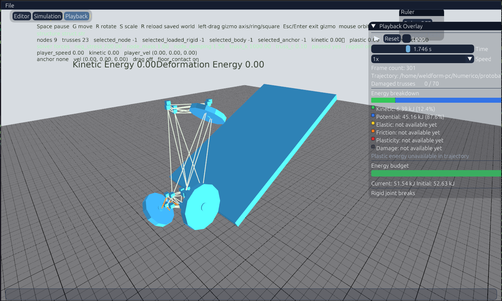
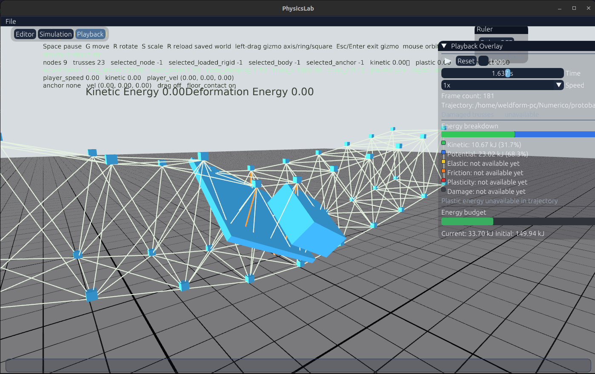
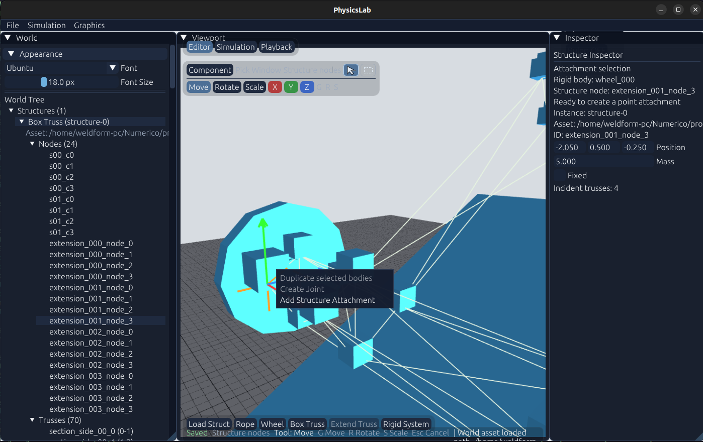

A Lot of New Systems



A lot of new features have landed in ProtoBall recently. This update covers several improvements to the physics systems and a major step forward for the editor.
What's New
- Rigid-body attachments to deformable structures. Rigid bodies can now be connected to structures and interact with the world. These attachments are not breakable yet, but breakable attachments are planned for a future update.
- Energy distribution and budget tracking. The interface now includes potential and kinetic energy panels, along with an energy budget showing current energy versus initial energy. Friction, elastic, plastic and wreckage energies are planned next.
- A much-improved editor. Navigation now feels more like Blender, with move, rotate and scale gizmos, plus separate object and component selection workflows.
- Breakable joints between rigid bodies. Joints can now fail during simulation, making it possible to build systems that react to stress and impact.
- Physics component builders. Wheel-and-axle and rope builders are now available, with many more components planned.
These systems are bringing ProtoBall closer to its goal: a physics playground where complex machines and structures can be assembled, simulated and inspected directly inside the editor.